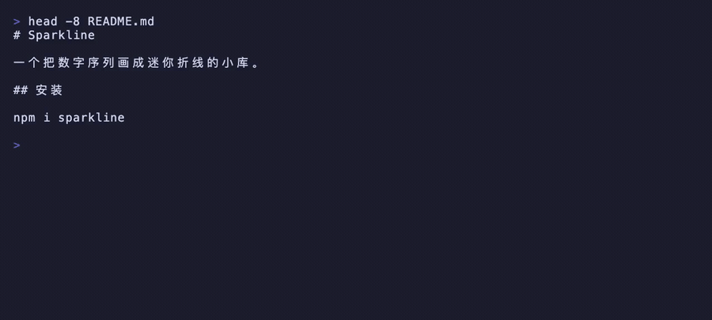
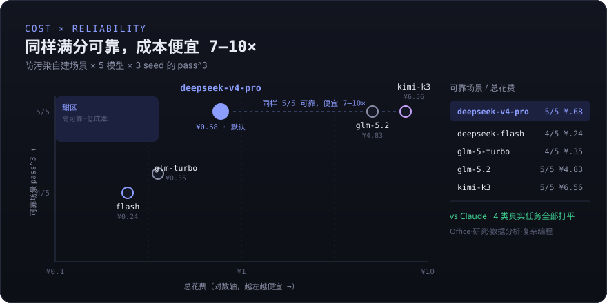

Node ≥ 22.5 · 首跑向导粘 key,直接用


npm i -g @silassolivagus/deepcode deepcode
export DEEPSEEK_API_KEY=sk-... # 或 GLM_API_KEY / MOONSHOT_API_KEY deepcode # 交互式 /model # 切换 provider / 模型
deepcode # 交互式 TUI deepcode -p "写一个 today.sh" # headless 单次任务 /model # 切换 provider / 模型 /think # 开关深度思考 Ctrl+J # 输入框内换行 # 这个仓库用 pnpm # 行首 # 快速记忆
/permissions # 查看权限规则 deepcode --permission-mode plan # 只读规划，不改文件 deepcode --permission-mode accept # 自动接受，无需逐条确认
# 这个项目的测试命令是 pnpm test # 行首 # 立即写入记忆 cat DEEPCODE.md # 项目级记忆文件
/agents # 查看可用子代理 /loop 10m /review-prs # 按固定间隔重复执行
deepcode -p "给 utils/date.ts 补齐单元测试并跑通"